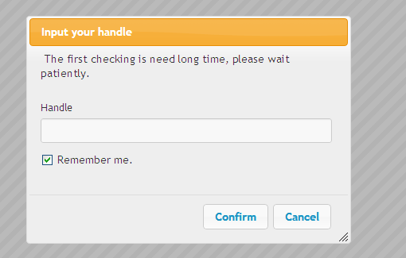
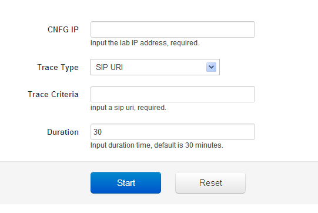
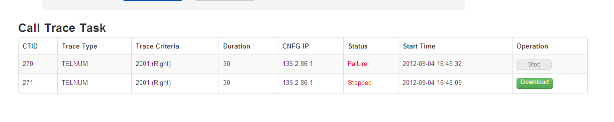
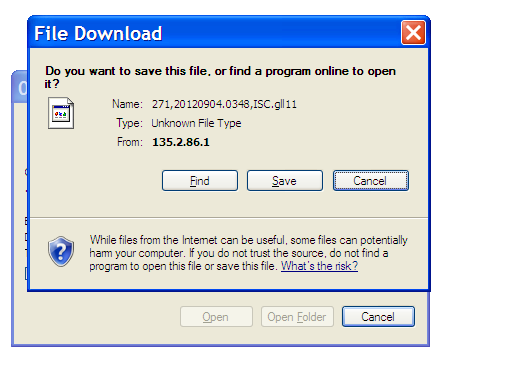

Version 1.0
The call trace web tool is only available from ISC22.1 (R26.12.01 and late release).
If you download the PCAP files, IE or Firefox is recommended (Chrome doesn't support FTP).
Log in with your handle.
Input ISC lab CNFG IP address and criteria you want to trace.
Click Start. The trace task is working.
If there are some calls matches the criteria you just set, the call will be traced.
Click stop or wait it is expired, you can see the “download” if there is any result for the trace task.
Click “download” to get the PCAP trace file to local PC, it could be opened by Wireshark.
Multiple trace tasks could be started simultaneously.
User can manage the trace tasks based on the login (handle).
User can download the PCAP file to local PC directly if the trace has any result.
Trace task can be restored when the web browser is re-opened again.